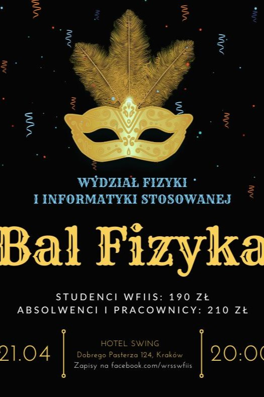

Najbliższa Wydziałówka odbędzie się 14.12.2023
Zapraszamy!
Następna Kawa z WRSSem odbędzie się w styczniu
Zapraszamy!
Tegoroczny Bal Fizyka planowany jest na 26.04.2024
Zapraszamy!

Wydziałowa Rada Samorządu Studentów jest najwyższym organem Samorządu na Wydziale. Reprezentuje interesy studentów, uczestniczy w pracach organów kolegialnych Wydziału i Uczelni. Wyraża opinię społeczności studentów Wydziału w sprawach takich jak: program studiów, jakość kształcenia. Uczestniczy też w życiu wydziału poprzez współpracę z władzami Wydziału, dbając o sprawy socjalno-bytowe i kulturalne na Wydziale, reprezentuje studentów w kontaktach z władzami i kadrą akademicką, służy wsparciem i pomocą wspólnocie akademickiej.
Bal Fizyka to coroczne wydarzenie integrujące środowisko akademickie - studentów, pracowników Uczelni oraz kadrę profesorską. Impreza taneczna zachowana w klimacie balu, jest to ciekawy sposób na spędzenie czasu w gronie osób które spotykamy na co dzień na uczelnianych korytarzach. Co roku w wydarzeniu bierze udział około 120 osób.

 WRSS WFiIS AGH
WRSS WFiIS AGH